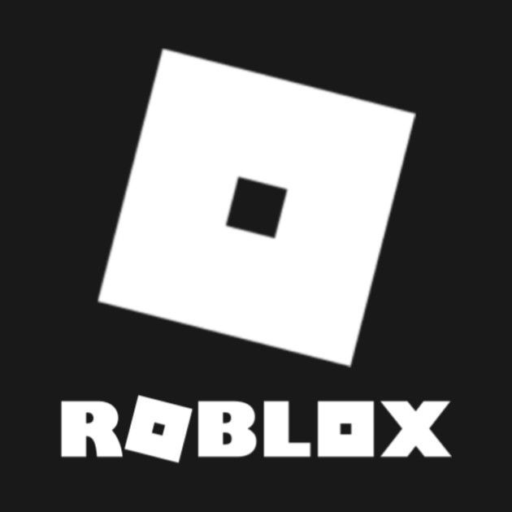

Hi!
Hi! I'm
I'm
Isabel. a CS undergrad. a software engineer. an entrepreneur.
CUNY Hunter College | Major League Hacking
about.
I am Isabel Sofia V. Abonitalla, a computer science undergraduate student at CUNY Hunter College. I'm currently a Hackathon Coach at Major League Hacking. I also serve as the Chapter Director for TechTogether New York, as well as a [freelance web developer and personal tutor]. I will be graduating with my Bachelor's Degree this May. I am currently looking for full-time opportunities in software engineering or product management. I am also open to freelance work. Feel free to reach out to me!
Want to learn more? Click to see a random fun fact about me!
Let's keep the conversation going! Contact me:
Learn about some of my work here:
featured news.
- Hack House 3: Demo Day NYC (Timestamp 1:25:03)
- MLH Hackcon IX Lightning Talk: 4 Ways You Can Support Your Hackers
- The National Center for Women & Information Technology (NCWIT) Selects Finalists for the 2021 NCWIT Collegiate Award
- An interview with Isabel Abonitalla: Chapter leader, student, and entrepreneur
- I was named one of Major League Hacking's Top 50 Hackers in 2020. Out of 100,000 students who participated in hackathons, my story was one of 50 that was recognized on this list due to my projects and impact on other students in the community.
- The co-founders of Shine, Naomi Hirabayashi and Marah Lidey, sit with Isabel, computer science student, to talk about shifting workspace culture to celebrate an employee's whole self and life outside of work.
- NJII Code-a-thon focuses on Maternal Mortality and Morbidity.
- Newtown High School graduation speech
- Consortium Alumni Youth Council member Isabel Abonitalla talks about her experience in the Urban Barcode Research Project and the Hypothekids HK Maker Lab Program.
- How cool is science? Students use barcoded DNA to identify a weapon against antibiotic resistance.
- HK Maker Lab is our 6 week intensive biomedical engineering design program for 24 New York City high school students.
experiences.
-
Please click on the job title to learn more about each position.
-

Software Engineer Intern @ Microsoft
Atlanta, GA
May 2022 - August 2022▪ Implemented a rollback feature for the Impactful Orchestrator in C# with the Azure Planned Maintenance team
Microsoft Corporation is an American multinational technology corporation which produces computer software, consumer electronics, personal computers, and related services. Its best-known software products are the Windows line of operating systems, the Microsoft Office suite, and the Internet Explorer and Edge web browsers. Its flagship hardware products are the Xbox video game consoles and the Microsoft Surface lineup of touchscreen personal computers. -

Hackathon Coach @ Major League Hacking
New York, NY
March 2022 - Present▪ Facilitate the success of eleven 24-36 hour programming competitions each with 300+ students in attendance
▪ Teach international virtual workshops on technical and entrepreneurial topics to 40+ students
Major League Hacking (MLH) is the official student hackathon league. Each year, we power over 200 weekend-long invention competitions that inspire innovation, cultivate communities and teach computer science skills to more than 65,000 students around the world. MLH is an engaged and passionate maker community, consisting of the next generation of technology leaders and entrepreneurs. -
Undergraduate Teaching Assistant @ Hunter College
New York, NY
February 2022 - December 2022▪ Host office hours for 30+ students in the Computer Science department
▪ Teach data structures and algorithms to students in CSCI235: Software Analysis and Design II
The Department of Computer Science is located at Hunter's 68th street campus on the upper east side of Manhattan. Providing students with outstanding preparation both for employment as computer professionals and for future graduate study, the department expects students to construct creative solutions to challenging problems in a variety of contexts. The small but diverse faculty works closely with students in an open and collegial atmosphere. Our curriculum focuses on hands-on programming skills as well as the theoretical foundations that support current technology and will guide its future development. -
Founder @ Craving
New York, NY
August 2021 - March 2022[Pitch Deck]
▪ Oversaw and managed the development of a mobile dating app which uses React Native and Firebase
▪ Created product requirements, technical specifications, business plan, pitch deck, roadmap, and other documents
▪ Participated in CUNY Startups accelerator program and finished ranking 4th out of 15 teams as well as Pioneer accelerator program and ranked 24th in North America
Craving is a dating app that emphasizes communication, transparency, and safety to provide a better and more well-rounded dating experience. -

Product Management Intern @ Roblox
San Mateo, CA
May 2021 - August 2021▪ Ideated key new features and wrote specification documents geared towards design and engineering teams
▪ Designed product requirements and low-fidelity mockups for desktop interfaces
Roblox’s mission is to bring the world together through play. We enable anyone to imagine, create, and have fun with friends as they explore millions of immersive 3D experiences, all built by a global community of developers. Roblox is powered by a global community of over two million developers who produce their own immersive multiplayer experiences each month using Roblox Studio, our intuitive desktop design tool. Any experience imaginable can be created on Roblox. Roblox is ranked as one of the top online entertainment platforms for audiences under the age of 18 based on average monthly visits and time spent (Comscore). Our popularity is driven purely by the community with millions of people signing up through word of mouth every month. -
Software Engineer Intern @ Oden Technologies Inc.
New York, NY
February 2021 - May 2021▪ Improved user experience and addressed users' feature request by implementing drag-and-drop reordering of results filters using React Typescript
▪ Created dynamic data visualization options for metrics taken from industrial IoT sensors using Go and GraphQL
▪ Prototyped a cross-platform mobile application that delivers alerts and notifications using React Native
Oden Technologies is the intelligent industrial automation company, empowering manufacturers to embrace Industry 4.0 and achieve perfect production. Oden provides complete visibility into all the production processes in real-time. It wirelessly collects data from any machine, integrates it with third-party systems and delivers instantaneous insights leading to effective quality control, timely maintenance and lower machine downtimes, optimized operations, and higher customer satisfaction.
Oden’s mission is to help any manufacturer - large or small - reach ‘perfect production’. Make products better, faster, with less waste and impact on the environment. -
Director of Partnerships, Web Developer and Project Manager @ JumpButton Studio
Philadelphia, PA
January 2021 - October 2021▪ Develop components for new company website and other client websites
▪ Manage projects by organizing sprints as well as creating scopes of work and roadmaps
▪ Support CEO in creating pitch decks and other fundraising efforts
JumpButton Studio is an award-winning studio making products that solve problems, invoke change, and inspire creativity through games, applications, and animated entertainment. -
Teaching Assistant @ Research Foundation of City University of New York
New York, NY
September 2020 - December 2020▪ Tutor 25 students in Computing Fundamentals class on course assignments
▪ Assist students with lab activities and course project implementation
▪ Assist the instructor with student feedback and class activities
This course introduces students from any non-CS major to the fundamental concepts of computing, technical innovations, and social issues that are at the heart of computer-based technologies. Students are introduced to the myriad uses of the Internet, cloud services, social media, other computer applications designed to connect physical and digital worlds. -
Founder & President @ Hunter College Google Developer Student Club
New York, NY
July 2020 - Present▪ Facilitate communications between core team, Google representatives, and campus faculty and student government
▪ Plan and execute workshops and panels on technical skills and professional development
Developer Student Clubs are university based community groups for students interested in Google developer technologies. Students from all undergraduate or graduate programs with an interest in growing as a developer are welcome. By joining a DSC, students grow their knowledge in a peer-to-peer learning environment and build solutions for local businesses and their community. -
Lead Developer and Board Member @ The Purple Hydrangea Project
Chino Hills, CA
June 2020 - September 2021▪ Delegate tasks to the dev team and mentor the high school students in programming and career development
▪ Make executive decisions, discuss solutions for issues that arise, and start initiatives that affect the entire organization
▪ Modernize and spearhead the development of the web app and blog
The Purple Hydrangea Project is a student-run 501(c)3 nonprofit organization dedicated to advocating for mental health awareness in children and teens. In our fight to eliminate the stigma around mental health, we hope to move the community towards an environment of understanding in which everyone can feel safe in reaching out for help and speaking about their mental health struggles without fear of being judged, ignored, or shunned. -

Founder and Executive Director @ HackGuild
New York, NY
May 2020 - March 2021▪ Manage administrative duties which include nonprofit compliance, documentation, and financial reports
▪ Create biweekly sprints, delegate tasks, and ensure that 20 members meet deadlines with high quality deliverables
▪ Develop and maintain website
HackGuild is a nonprofit dedicated to increasing access to tech education to underserved communities and empowering the next generation of innovators, computer scientists, and tech professionals. We do this through organizing beginner-friendly hackathons, workshops, conferences, and more. Through these events, we aim to help students from disadvantaged populations explore CS, and overcome barriers in pursuing a career in technology. -
Web Development Intern @ Caribou Health
Toronto, Ontario, Canada
May 2020 - August 2020[Company Website]
▪ Develop components for web-based healthcare platform
▪ Follow the Agile methodology and participate in daily standups and weekly retros
Caribou is a marketplace that connects people living with cancer to cancer care advisors for support services, including but not limited to: researching and understanding the disease, finance and insurance-related challenges, searching for physicians, and appointment preparation. -
Lead Organizer @ CUNY Hackathon
New York, NY
February 2020 - July 2022[Hackathon Sponsorship Packet]
▪ Leading the logistics team in
▪ Led the sponsorships team in communicating and negotiating via email and phone call with company representatives, delegating tasks and raising over $25,000 in two months
▪ Led the communications team in creating and moderating both the Discord server and Hopin virtual conference platform
CUNY Hackathon 2021 will be the second iteration of New York City’s biggest hackathon for CUNY students from all 25 schools within the City University of New York system. The virtual two-day hackathon will bring together students, and professionals in creative, software development, marketing, and entrepreneurship to build solutions to problems unique to the New York City community. Students will also have the opportunity to learn during workshops or activities hosted during the Hackathon, all with the goal of improving our great city. The event is hosted by CUNY Startups, Macaulay Honors College, the College of Staten Island, CUNY Career Success Initiatives and a team of student leaders from across the CUNY system. -

Operations and IT Intern @ Fiera Capital Inc.
New York, NY
January 2020 - July 2020▪ Developed a data parser that pulls 18 years' worth of data from the FBI's crime reports to calculate Environmental, Social and Corporate Governance criteria used for investments
• Enhanced the controls and reporting processes, saving 400 hours and $20,000 a year for the accounts services team
Fiera Capital Corporation is a global independent asset management firm with over $124 billion in AUM as of September 30, 2019, more than $25 billion of which is managed or advised by the U.S. division. We deliver customized multi-asset solutions across traditional and alternative asset classes to institutional, retail and private wealth clients across North America, Europe and key markets in Asia. We strive to be at the forefront of investment-management science and we are passionate about creating sustainable wealth for clients. -

Director of Operations @ HAX
Chicago, IL
March 2019 - April 2020▪ Promoted to director within 5 months of managing the design team in the creation of graphics & social media posts and the maintenance of branding standards
▪ Streamlined onboard of volunteers & mentees to lower attrition rate
▪ Managed nonprofit compliance, financial reports, logistics, quarterly goals, and maintenance of guidelines & standards
As a nonprofit, HAX aims to globalize computer science education for all by hosting hackathons as a way to provide equal opportunities for women and disadvantaged minorities. We are guided by our three core values: inclusiveness, accessibility, and education. We emphasize these values through our hackathons that are catered towards educating and empowering women and minorities to pursue computer science and using it for social good. -

Data Analytics Intern @ City University of New York: Registrar
New York, NY
July 2019 - August 2019▪ Collaborating with a team of 6 to collect, organized and analyzed educational and institutional records for student enrollments
▪ Researched and standardized the records of over 250 comprehensive courses offered by the CUNY system
▪ Validated over 1400 records of institutions from CUNY applications
▪ Tested and debugged Schedule Builder, a student-facing software application that allows them to optimize their class schedules
The Office of the University Registrar serves to ensure academic integrity by communicating institutional policies and is a resource for all members of the college community. OUR fosters an environment that supports students, alumni, faculty, administrators, staff and the community in order to promote the educational mission of the University. The Office of the University Registrar monitor university practices and procedures and recommend changes to ensure the most accurate, efficient and prompt service. -
Quality Manager @ Khan's Tutorial
New York, NY
March 2017 - March 2019▪ Promoted to manager within 7 months of instructing over 70 students
▪ Yielded a 20% increase in sales and enrollments; enabled over 239 students get 88th percentile on SAT and over 252 students get over a 90 on state exams
▪ Spearheaded the creation of a more efficient student database for the SAT program
▪ Supervise and collaborate with 5 instructors who teach over 210 enrolled students for state exams and the SAT
▪ Manage classroom logistics; office and technical inventory; and company finances
Khan’s Tutorial is a tutoring academy founded in 1994 with 11 locations and over 300 highly-trained instructors. The High School Achievement Program prepares students to excel in high school and gain acceptance to the top colleges of their choice with financial aid and scholarships by providing subject tutoring, standardized test-prep, and mentorship through weekend sessions, small group classes, and daily classwork and homework from a specialized and challenging curriculum. -

Nursing Informatics Intern @ Robert Wood Johnson University Hospital
Newark, NJ
January 2019▪ Educated nursing directors on using HealthGrid for electronic medical records and optimizing patient experience
▪ Debugged and troubleshooted Find Your Way, the in-house navigation app
The Nursing Informatics Department is an interdisciplinary team who research, educate, implement, and maintain technology to promote and ensure high quality patient care and patient safety while motivating and leading the nursing team. -

Research Associate @ Columbia University Irving Medical Center
New York, NY
June 2017 - August 2018▪ Applied machine learning algorithms to classify multiple sclerosis variants based on proton spectroscopy data from the human brain
▪ Developed algorithm using R Studio with over 72% accuracy in classifying multiple sclerosis variants in patients
The MR-Science Laboratory pursues MR engineering in the fields of magnetic resonance imaging (MRI), spectroscopy (MRS) and spectroscopic imaging (MRSI) to advance their clinical potential for the study of neurodegenerative diseases. To this end, MR method developments are combined with state-of-the-art MRI, MRS and MRSI techniques to derive in vivo direct knowledge of the pathobiochemistry underlying clinical conditions such as multiple sclerosis, diabetes or post-traumatic stress disorder (PTSD). -

Research Intern @ Icahn School of Medicine at Mount Sinai
New York, NY
April 2016 - May 2017[Virology Research Poster]
▪ Identified novel phage by characterizing soil biomes using next-generation sequencing
▪ Participated in preparatory classes in Conservation Biology & DNA Barcoding
The tenOever lab [pronouced ‘ten-oo-ver’, like maneuver with a ‘T’.] is interested in the way cells have evolved to defend themselves against virus infection. More specifically, the lab focuses on what constitutes different cellular defense systems, how these systems have been shaped over time, and how viruses circumvent them and cause disease. -

Student Intern @ Fu Foundation School of Engineering and Applied Science
New York, NY
July 2016 - August 2016[Biomedical Engineering Prototype Poster]
▪ Prototyped & tested a guidance system for the visually impaired using ultrasonic sensors placed on glasses accompanied by speakers
▪ Devised a business plan & presentation for a panel of biomedical professionals
The Hk Maker Lab is an intensive six-week summer program to learn the foundations of design. Focusing on addressing a health problem, participants will design, prototype and test a biomedical device and develop an associated business plan. The program will culminate in a presentation to leading executives from the biomedical community. The Hk Maker Lab projects might then be incubated using the state-of-the-art facilities at Harlem Biospace.
projects.
I've been in over 70 hackathons and won an award at 15 of them. Choose an (very) old project through the dropdown menu above to learn more.

Plate
OpenHacks: May 2020
Personal Contribution:
• Developed several of the pages of the web app prototype using React
Created with: { React.js, Spring Boot, MySQL }
Plate is not just any ordinary task management application! What makes it unique is its time tracking and budgeting feature. There are 168 hours in a week. Subtracting time needed for basic human necessities like sleep, we have around 100 hours a week to be productive. Plate helps the user budget those 100 hours accordingly to the user's different responsibilities and commitments. It divvies up those hours accordingly, and makes sure the tasks tagged with those commitments do not exceed the time alloted. It holds the user accountable to their time and does not let them overwork or underwork for each commitment they've signed up for.

AccounTwin
Hack At Home:
May 2020
Personal Contribution:
• Developed several of the pages of the web app prototype using React
Created with:
{ React.js, MongoDB, GraphQL, Node.js }
AccounTwin lets you win with a twin! Be held accountable by like-minded and driven individuals to reach your goals together. Similar to the dating app Tinder, users are mutually matched based on a swipe left or right mechanism. Other users are displayed anonymously based on their goals. Once matched, the users can then communicate with each other and disclose the essential information to hold each other accountable.

NYC COVID Data
Newlab COVID Hacks: April 2020
Personal Contribution:
• Worked individually to create all data visualizations
Created with: { Tableau }
Using open source data on NYC's demographics and the NY Times' COVID data, I created 14 tables, maps, and graphs showing different relationships between factors. One of the noteworthy findings that I found was that the negative correlation between the number of COVID cases and the zip code area's median income is significantly stronger than the negative correlation between the number of COVID cases and the population density of the zip code area. What I infer from this is that socioeconomic status has a stronger effect on COVID than people's ability to follow social distancing.
Home Buyers
Brown Datathon: February 2020
Personal Contribution:
• Assisted in creating data visualization dashboards
Created with: { R }
The challenge that was set forth was to find insights between the number of home buyers within a small zip-9 area and the many features in the given dataset by one of the corporate sponsors. The team created two interactive dashboards that visualized the given data in an accessible and user-friendly manner.

SmartSpray
Hack@CEWIT: February 2020
Personal Contribution:
• Created desktop dashboard that visualized sensor data
• Developed multiple regression algorithm to predict crop yield based on sensor data
Created with:
{ Grafana, Swift, X Code, Arduino, Raspberry Pi, Google Cloud Platform, Python, Node.js, MySQL }
In order to address the water waste issue in agriculture, the team created a network of monitoring sensors that detected soil moisture, temperature, humidity, and UV index. This information is then presented to the user (presumably farmers) in an accessible way, in both a desktop dashboard and iOS app. Both show the data and alert the user if certain measurements are beyond ideal conditions. Moreover, there is a machine learning algorithm that predicts crop yield in kg/acre based on the 4 measurements.

House.py
HackHer413:
February 2020
Personal Contribution:
• Developed computer vision algorithm to measure the dimensions of an object in a given image
Created with: { HTML/CSS, OpenCV, Django }
We are preventing inaccessibility before it even arises! Using computer vision algorithms, we allow engineers and interior designers to align their designs to accessibility regulations and best practices. This improves the quality of life for every differently-abled person.
Our website provides a platform for engineers, architects, interior designers, and other home creators to have a checklist of accessibility regulations. Using computer vision to "check off" the different requirements for making an accessible home makes it even more convenient for creators to tailor their designs to the user that requires accommodations. Users can take a picture of a part of the house, like the door, and see if it's accessible for all users. In this example, the app will check whether the door is wide enough to fit a wheelchair.
Enviro
TechTogether Boston: January 2020
Personal Contribution:
• Designed and implemented front-end development
Created with:
{ Google Cloud Platform, React, Redux, Express }
Enviro streamlines the recycling process by providing users with all the information that they need without any of the hassle. It (1) classifies the user's image based on what kind of trash it is, (2) teach the user how to recycle that item, and (3) measure the user's impact on the environment.
The user takes a picture of a piece of trash and our product classifies that trash based on 14 categories. Based on that category, the user is taught how to recycle, repurpose, or dispose of that trash. Moreover, the impact of the user's actions is measured and quantified.

FemmeCare
Technica:
November 2019
Personal Contribution:
• Designed both mobile wireframes and web app prototype
Created with: { Python, Flask, SQLite, HTML/CSS,
Twilio, Capital One API }
FemmeCare is a finance app that rounds off all bank transactions to the nearest dollar and uses that surplus to donate or invest in nonprofits that support women. From providing menstrual products to the homeless, making industries more inclusive and diverse, and advocating for the trans community, to destigmatizing sex workers and securing protection from revenge porn, the user chooses where their money goes, but all options are female-centric and all-inclusive of females.

Scholars at Risk
JP Morgan Chase Code for Good: September 2019
Personal Contribution:
• Assisted in the front-end development of the web app
Created with:
{ React, Node, TypeScript, HTML/CSS }
The team created a web app that aided Scholars at Risk, a nonprofit organization, recieve and process information from at-risk scholars all over the world. We also created a user-friendly admin dashboard that allowed the nonprofit to screen and assist the scholars they are trying to protect.
Scholars at Risk is an international network of institutions and individuals whose mission it is to protect scholars and promote academic freedom.

Reunited
PennApps XX:
September 2019
Personal Contribution:
• Created a website to house the computer vision algorithm
Created with: { Amazon Web Services, Flask, HTML/CSS, mySQL }
Reunited provides a platform for families to find their missing children as well as a way for concerned citizens to report a child's information to help find their family. The web app compares two photographs of children and determines whether those two children are the same person with an accuracy of over 90%. This creates a match between parent and temporary caretakers in order to reconnect the children with their families.

Captain Planet
DragonHacks:
April 2019
Personal Contribution:
• Collected and visualized data regarding ocean conservation
Created with: { Unity: ARCore, C#, HTML/CSS/JS, Firebase }
Captain Planet simulates an interactive underwater VR domain, aimed towards educating people of all ages about the marine ecosystem depletion due to human activities. It takes the user in a multiplayer underwater ocean bed, whilst monitoring the health levels of the surroundings. It provides them with a closer perspective on water pollution, dead zones, and instructs them on the basic steps that one can take to preserve oceans. It is a multi-level game that begins by restoring a stable ecosystem in a dead zone covered by an algal bloom. Along every step of the way, Captain Planet's immersive platform educates users on what steps need to be taken to restore a healthy environment.

MySympTracker
TechTogether Boston:
January 2019
Personal Contribution:
• Designed and developed website
Created with:
{ HTML/CSS, Node.js, Express.js, MongoDB, Microsoft Azure, Twilio }
One of the biggest disparities in healthcare is the lack of widespread knowledge of many common health issues. We wanted to create an application that would help address this and decrease the severity of this, making room for more universal access to healthcare. Users can take a photo of themselves which will undergo facial emotion recognition. An additional questionnaire will be administered, detailing symptoms associated with health issues associated with the emotion that the user is displaying. Based on the user's answers to the questionnaire, an automated voice call will be made to the number that the user had inputted as their primary care physician, detailing the symptoms they had been experiencing and the possible health issue they could be a result of, urging a call back to the user to schedule an appointment.

MamaCare
New Jersey Innovation Institute Maternal Mortality and Morbidity Code-a-thon:
January 2019
Personal Contribution:
• Acted as both product manager and UX/UI designer
• Created wireframes and user persona
• Interpreted medical jargon to engineering team and judging panel in clear, accessible language
Created with: { Flutter, API's for smart devices, Node, MongoDB, Twilio }
MamaCare is a cross-platform mobile app that educates pregnant & postpartum women, tracks their symptoms & risk factors, and calls the physician when their symptoms surpass healthy thresholds.
Know Your School
ByteHacks:
September 2018
Personal Contribution:
• Cleaned, parsed, and visualized open data from NY State
Created with: { HTML/CSS/JS, Python, R }
Know Your School is a website which provides graphic data and links to relevant datasets which are either hard to understand in their raw form or not easily found without sifting through pages and pages of data on data.ny.gov. We focus on the data that user interfaces like data.nysed.gov do not show upfront, such as violence in and around schools, dangerous lead levels in water, and poor physical infrastructure. We also provide functionality to find NYC petitions for education improvement, contact your local representatives, and donate to local schools.